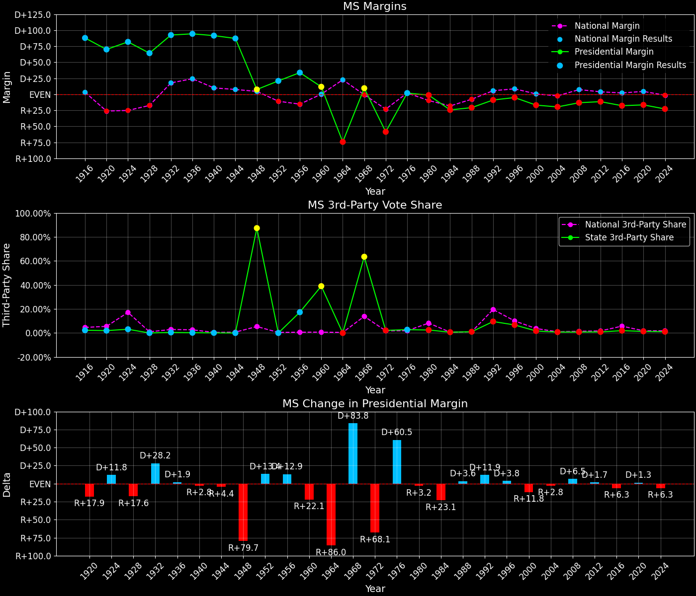

Mississippi (MS) — Statewide

Margins · 3P share · Pres. deltas

Relative margins · Relative 3P · Rel. deltas
Mississippi (MS) — Total Data
| Year | EVs | D | R | Margin | Rel. Margin | Nat. Margin | Margin Δ | Rel. Margin Δ | Nat. Margin Δ | Total votes |
|---|---|---|---|---|---|---|---|---|---|---|
| 1968 | 7 | 150,644(23.0%) | 88,516(13.5%) | D+9.5 | D+10.1 | R+0.6 | 654,509 | |||
| 1972 | 7 | 126,782(20.1%) | 505,125(79.9%) | R+59.9 | R+36.3 | R+23.5 | R+69.4 | R+46.4 | R+23.0 | 631,907 |
| 1976 | 7 | 381,309(49.6%) | 367,025(47.7%) | D+1.9 | R+0.3 | D+2.2 | D+61.7 | D+36.0 | D+25.7 | 769,543 |
| 1980 | 7 | 429,281(48.1%) | 441,089(49.4%) | R+1.3 | D+8.6 | R+9.9 | R+3.2 | D+8.9 | R+12.1 | 892,620 |
| 1984 | 7 | 353,248(37.8%) | 582,327(62.2%) | R+24.5 | R+6.4 | R+18.1 | R+23.2 | R+14.9 | R+8.2 | 935,575 |
| 1988 | 7 | 363,921(39.5%) | 557,518(60.5%) | R+21.0 | R+13.3 | R+7.7 | D+3.5 | R+6.9 | D+10.4 | 921,439 |
| 1992 | 7 | 400,258(41.1%) | 487,793(50.1%) | R+9.0 | R+14.6 | D+5.6 | D+12.0 | R+1.3 | D+13.3 | 973,677 |
| 1996 | 7 | 394,020(44.3%) | 439,833(49.4%) | R+5.1 | R+13.7 | D+8.6 | D+3.8 | D+0.9 | D+3.0 | 889,938 |
| 2000 | 7 | 404,964(40.7%) | 573,249(57.7%) | R+16.9 | R+17.4 | D+0.5 | R+11.8 | R+3.7 | R+8.0 | 994,325 |
| 2004 | 6 | 458,094(39.8%) | 684,981(59.4%) | R+19.7 | R+17.2 | R+2.5 | R+2.8 | D+0.2 | R+3.0 | 1,152,365 |
| 2008 | 6 | 554,662(43.0%) | 724,597(56.2%) | R+13.2 | R+20.4 | D+7.3 | D+6.5 | R+3.2 | D+9.7 | 1,289,865 |
| 2012 | 6 | 562,949(43.8%) | 710,746(55.3%) | R+11.5 | R+15.4 | D+3.9 | D+1.7 | D+5.1 | R+3.4 | 1,285,584 |
| 2016 | 6 | 485,131(40.1%) | 700,715(57.9%) | R+17.8 | R+19.9 | D+2.1 | R+6.3 | R+4.6 | R+1.8 | 1,209,357 |
| 2020 | 6 | 539,494(41.1%) | 756,731(57.6%) | R+16.5 | R+21.0 | D+4.4 | D+1.3 | R+1.1 | D+2.3 | 1,313,791 |
| 2024 | 6 | 466,668(38.0%) | 747,744(60.9%) | R+22.9 | R+21.3 | R+1.5 | R+6.4 | R+0.4 | R+6.0 | 1,228,008 |
Column explanations
- Year
- Election year.
- EVs
- Number of electoral votes allocated to this state or unit.
- D
- Number of votes for the Democratic candidate (raw count(pct%)).
- R
- Number of votes for the Republican candidate (raw count(pct%)).
- Margin
- Margin between the two major-party candidates, including third-party votes ((D - R)/total).
- Rel. Margin
- The presidential margin relative to the national presidential margin (Margin - Nat. Margin).
- Nat. Margin
- The national presidential margin for that year, including third-party votes ((D_total - R_total)/total_votes).
- Δ
- Change (delta) in the value from the previous election year. Blank if no data for previous year.
- Total votes
- Total voter turnout or ballots cast (when provided).
Mississippi (MS) — Third-Party Data
| Year | Other votes | 3rd Party Share | 3rd Party Nat. Share | 3rd Party Rel. Share |
|---|---|---|---|---|
| 1968 | 415,349(63.5%) | T+63.5 | T+13.6 | T+49.9 |
| 1972 | 0(0.0%) | T+0.1 | T-0.1 | |
| 1976 | 21,209(2.8%) | T+2.8 | T+0.3 | T+2.4 |
| 1980 | 22,250(2.5%) | T+2.5 | T+7.0 | T-4.5 |
| 1984 | 0(0.0%) | T+0.1 | T-0.1 | |
| 1988 | 0(0.0%) | T+0.2 | T-0.2 | |
| 1992 | 85,626(8.8%) | T+8.8 | T+19.2 | T-10.4 |
| 1996 | 56,085(6.3%) | T+6.3 | T+9.7 | T-3.4 |
| 2000 | 16,112(1.6%) | T+1.6 | T+3.7 | T-2.0 |
| 2004 | 9,290(0.8%) | T+0.8 | T+0.8 | T-0.0 |
| 2008 | 10,606(0.8%) | T+0.8 | T+1.4 | T-0.6 |
| 2012 | 11,889(0.9%) | T+0.9 | T+1.6 | T-0.7 |
| 2016 | 23,511(1.9%) | T+1.9 | T+5.5 | T-3.6 |
| 2020 | 17,566(1.3%) | T+1.3 | T+1.8 | T-0.5 |
| 2024 | 13,596(1.1%) | T+1.1 | T+1.9 | T-0.8 |
Column explanations
- Year
- Election year.
- Other votes
- Number of votes for third-party (other) candidates (raw count(pct%)).
- 3rd Party Share
- Share of the vote received by third-party (other) candidates.
- 3rd Party Nat. Share
- The national third-party share for that year (3P votes / total votes).
- 3rd Party Rel. Share
- Third-party share relative to the national third-party share (3P share - Nat. 3P share).

Two-party margins · relative · deltas
Mississippi (MS) — Two-Party Data
| Year | 2-Party Margin | 2-Party Nat. Margin | 2-Party Rel. Margin | 2-Party Margin Δ | 2-Party Nat. Margin Δ | 2-Party Rel. Margin Δ |
|---|---|---|---|---|---|---|
| 1968 | D+26.0 | R+0.7 | D+26.7 | |||
| 1972 | R+59.9 | R+23.6 | R+36.3 | R+85.9 | R+22.9 | R+63.0 |
| 1976 | D+1.9 | D+2.2 | R+0.3 | D+61.8 | D+25.8 | D+36.0 |
| 1980 | R+1.4 | R+10.6 | D+9.3 | R+3.3 | R+12.8 | D+9.6 |
| 1984 | R+24.5 | R+18.1 | R+6.4 | R+23.1 | R+7.5 | R+15.6 |
| 1988 | R+21.0 | R+7.8 | R+13.3 | D+3.5 | D+10.4 | R+6.9 |
| 1992 | R+9.9 | D+6.9 | R+16.8 | D+11.2 | D+14.7 | R+3.5 |
| 1996 | R+5.5 | D+9.5 | R+15.0 | D+4.4 | D+2.6 | D+1.8 |
| 2000 | R+17.2 | D+0.5 | R+17.7 | R+11.7 | R+8.9 | R+2.8 |
| 2004 | R+19.8 | R+2.5 | R+17.4 | R+2.6 | R+3.0 | D+0.4 |
| 2008 | R+13.3 | D+7.4 | R+20.6 | D+6.6 | D+9.8 | R+3.3 |
| 2012 | R+11.6 | D+3.9 | R+15.5 | D+1.7 | R+3.4 | D+5.1 |
| 2016 | R+18.2 | D+2.2 | R+20.4 | R+6.6 | R+1.7 | R+4.9 |
| 2020 | R+16.8 | D+4.5 | R+21.3 | D+1.4 | D+2.3 | R+0.9 |
| 2024 | R+23.1 | R+1.6 | R+21.6 | R+6.4 | R+6.1 | R+0.3 |
Column explanations
- Year
- Election year.
- 2-Party Margin
- Margin between the two major-party candidates, ignoring third-party votes ((D - R)/(D + R)).
- 2-Party Nat. Margin
- The national presidential margin for that year, including third-party votes ((D_total - R_total)/total_votes).
- 2-Party Rel. Margin
- The presidential margin relative to the national presidential margin (Margin - Nat. Margin).
- Δ
- Change (delta) in the value from the previous election year. Blank if no data for previous year.